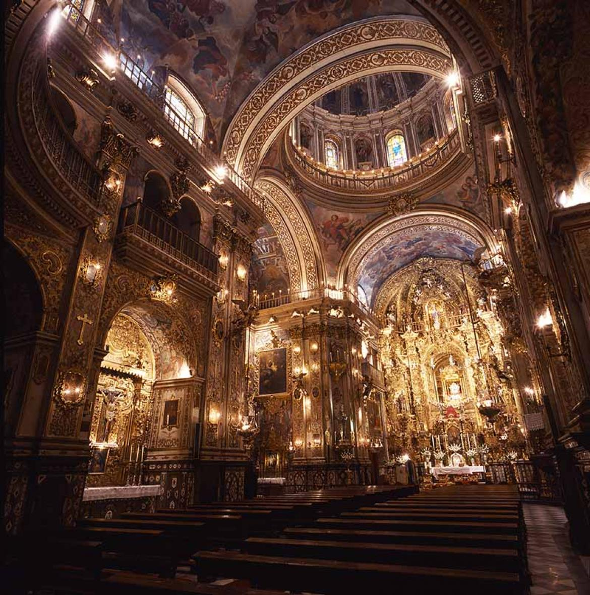

A mediados del siglo XVIII se levantó la Basílica de San Juan de Dios, que se encuentra en la calle del mismo nombre, en Granada.
Es una auténtica joya del arte barroco, que mandó construir Fray Alonso de Jesús y Ortega.
Entre los elementos de valor se encuentran adornos en oro y plata, magníficos murales y retablos, luces y cornucopias. Son de gran belleza los retablos, en especial el del altar mayor, donde descansan los restos de San Juan de Dios en un camarín, dentro de una urna de plata.
Fray Alonso pensó que se debía levantar una iglesia anexa al hospital de San Juan de Dios, como lugar de enterramiento del santo, y donde exponer las reliquias de San Juan de Dios. Para ello comenzó a administrar, desde 1737, las aportaciones voluntarias que hicieron los fieles devotos. El 27 de Octubre de 1759 la iglesia abrió sus puertas.
El diseño del templó estuvo a cargo de José de Bada y Navajas, autor de otras insignes obras de Granada, como la iglesia del Sagrario, la portada de la iglesia de Justo y Pastor, y el camarín de la Virgen del Rosario de la Iglesia de Santo Domingo.
La Basílica de San Juan de Dios es de una sola nave, de planta de cruz latina, con cúpula sobre el crucero y coro a los pies. Cuatro capillas laterales, dos en cada lado, se abren en sus muros, las cuales están precedidas por arcos semicirculares.
El coro a los pies del templo, se levanta sobre un arco escarzano, con bóveda vaída y barandilla de celosía. A ambos lados se disponen dos grandes tribunas, elemento que también se repite en la nave, en la Capilla Mayor.
Todo el interior está recargado, hasta el exceso, de tallas doradas, pinturas y mármoles.
A los pies de la Capilla Mayor se encuentra la sepultura de Alonso de Jesús y Ortega.
La parte más interesante de visitar la basílica es ver los restos de San Juan de Dios. En la nave principal de la iglesia reside el sepulcro del santo, rodeado de cirios, flores y alusiones al patrón de los enfermos.
En la parte superior de la basílica se encuentra el camarín, la pequeña capilla detrás del altar que alberga objetos personales del santo. En una urna de plata maciza se pueden ver la cruz de madera que San Juan de Dios llevaba siempre con él, muelas del santo y otras pequeñas partes de su cuerpo recuperadas para su veneración.
La cúpula y las paredes de la estancia están decoradas con figuras de ángeles y pinturas sobre la vida del santo. Resulta realmente espectacular.
| Precio | |
|---|---|
| Entrada General | 4€ |
| Horario | |
|---|---|
| Lunes a Sábado | 10:00-13:00 / 16:00-19:00 |
| Domingos | 16:00-19:00 |